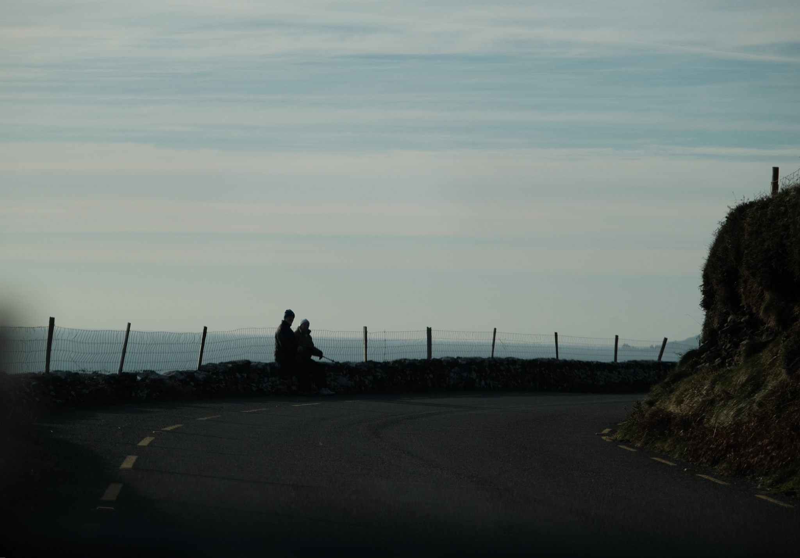
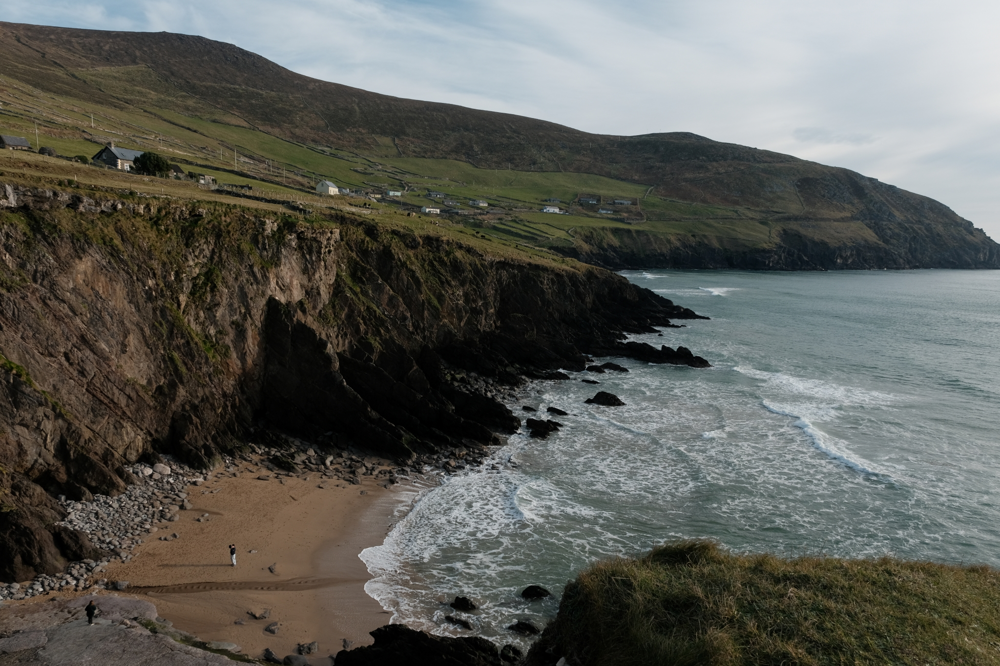
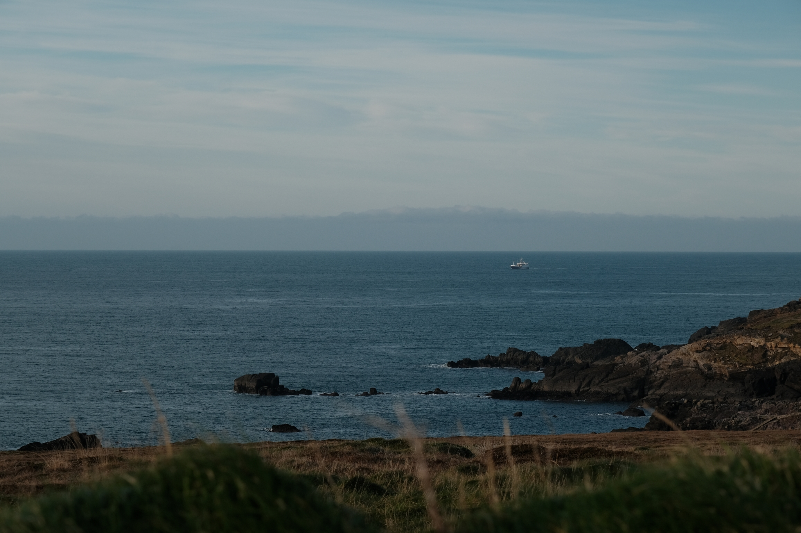
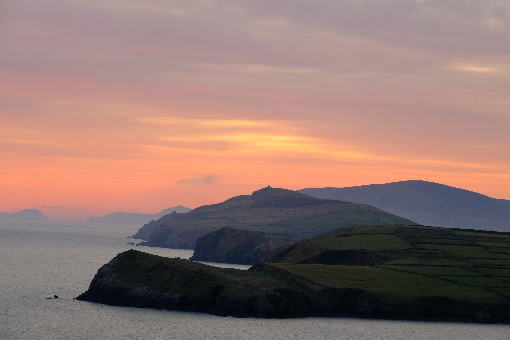
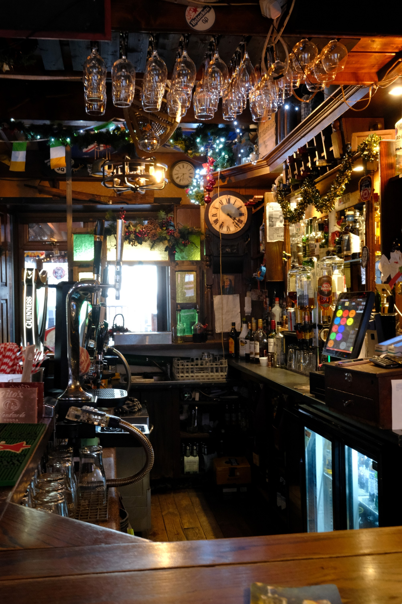
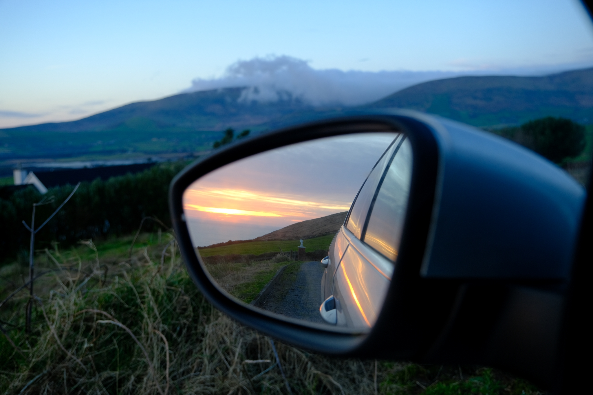
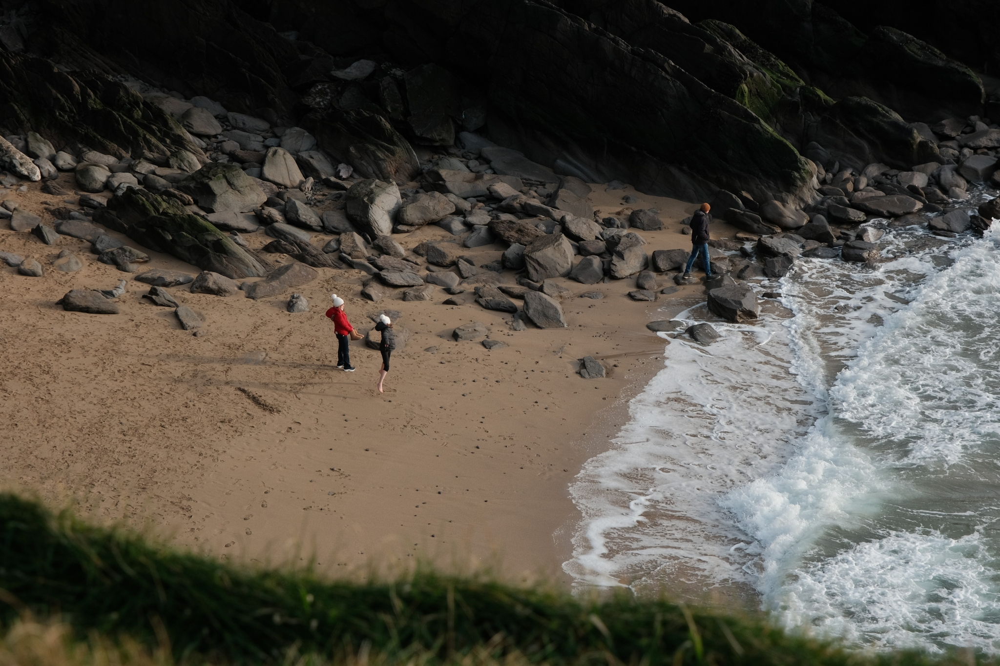

December 2025
Dingle, Ireland
Atlantic roads, distant horizons, and quiet pauses along Ireland’s western edge.







Atlantic roads, distant horizons, and quiet pauses along Ireland’s western edge.






